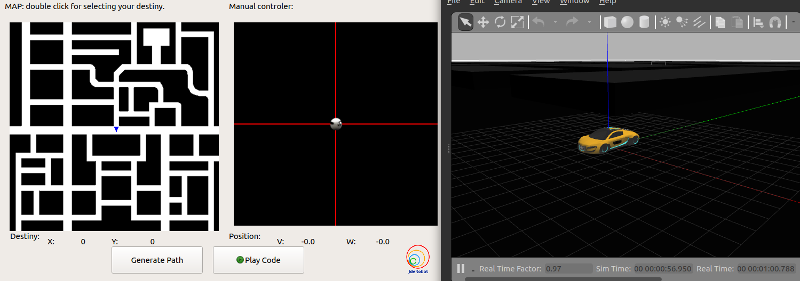
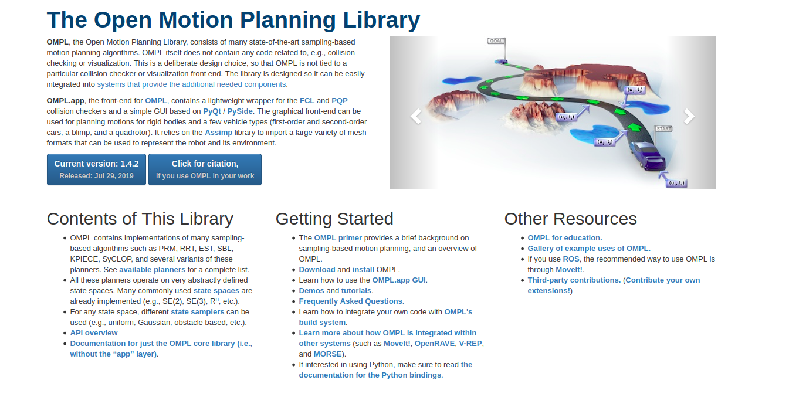
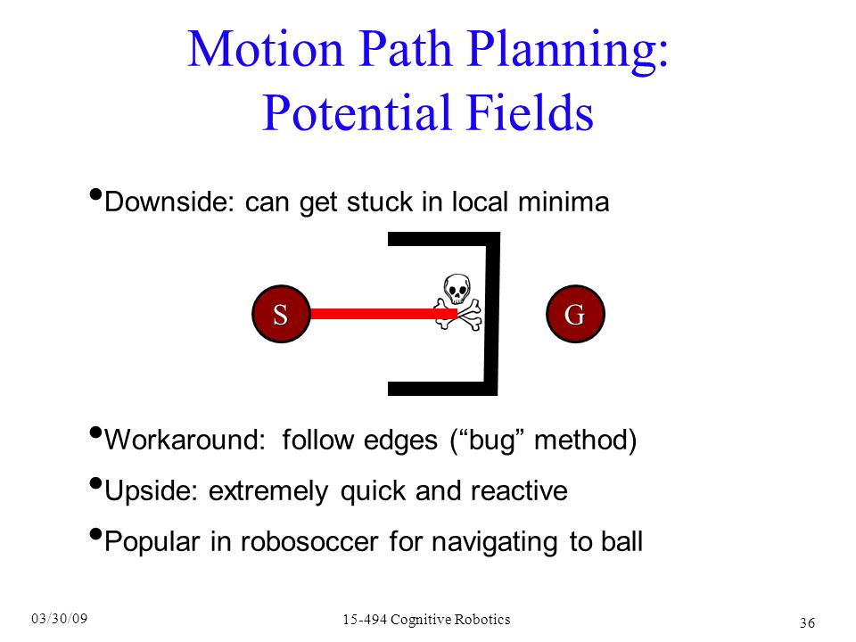

Mobile robot navigation is an essential issue in the field of robotics. They are known for their intelligence tendencies. They also cover wide range of applications, such as in transportation, industry, and rescue robots. This post talks about the pros and cons of some algorithms for Global Navigation Exercise on JdeRobot.
Motivation
The Global Navigation Exercise on JdeRobot involves navigating a taxi through a city while avoiding walls that appear along the way. The destination to the car is given by us using a GUI application. A more sense of motivation can be added by seeing it’s implementation in real life (or not so real life), Tony Stark’s Audi R8. Even, the taxi used in the exercise is almost similar except the color.

Global Navigation GUI

Tony Stark’s Audi R8, Automatic Drive
Path Planning
Before navigating through a path, we need to construct it! Path Planning is the name of the procedure where we construct the path from start to end. This post talks about the pros and cons of choosing an algorithm for Path Planning.
Simpler Way
It’s always easy and time saving when we can use prebuilt libraries and softwares with minimal changes to them. OMPL or Open Motion Planning Library, is one such library that consists of many well known sampling based motion planning algorithms. An additional benefit to prebuilt code is the Sampling Based Approach. Sampling algorithms are very fast as they are Randomized Algorithms. These algorithms work by randomly picking points in the map and connecting them to form the start to end path. For more information check out this link. This is the primer for OMPL library, which describes how to use the library and a little introduction to the algorithms. The introduction are quite good and get their point across the table. But it’s better to refer to Demos than the primer to learn about the library.

But, there is a very big problem associated with it! Current OMPL library works and installs on Python3, only! Python2 is not supported. Even after trying a lot of things, installing from Source, making changes to CMake files, there seems no way of making it complatible to Python2.
So maybe ROS can work on Python3. Well, this would have been the case if this video came a little earlier, or ROS Noetic was released earlier!

The Construct teaches people to use ROS
More Satisfying Way
Another approach is to use BFS based algorithm called the Wave Front Algorithm. The first step is to divide the map into grids and differentiate obstacles from non-obstacles. This work is already done in the exercise, which is a big relief. Even if we had to implement it, we would have to divide the cells according to the size of our car and implement a transformation matrix based on Gazebo coordinates and the 2D map coordinates.
As for the second step, the algorithm generates an outward wave starting from the target and keeps assigning weights to neighboring cells, until it reaches the start coordinates. The cells closer to walls have additional added weights to keep the car away from these walls. Intuitively, it is like waves bouncing back from the obstacles!

Similar to the reflection occuring due to the white wall
But there is one major issue, that any experienced programmer would understand. This algorithm is quite time and memory intensive(for our purpose, it is not!). We have to assign values to almost every cell and some even twice, when we have to add additional obstacle based weight!
Any alternatives?
More Impatient Way
Why not use Dijkstra’s Shortest Path Algorithm? Given a graph and the source vertex, the algorithm greedily finds the shortest paths from source to all vertices in the given graph. The algorithm maintains two sets, one set contains vertices included in shortest path, other set includes vertices not included in the path. At every step, we find the next cell, which takes us closer to our target cell, from the set which contains cells not yet included in the shortest path.
This algorithm very efficiently generates a path starting from target to source, while choosing the smallest path and taking the least possible time to do so! This algorithm works in a lot of cases, but will fail for some particular test cases due to the problem of Local Minima. The algorithm will keep on searching for the next cell which takes it closer to the target, but has to halt when there are no cells left, which take it closer!

The Local Minima Problem
Which one to use
So, Wave Front Algorithm is the one that should be implemented. Although, it takes time to generate the path, still it serves our purpose(A lot of time doesn’t mean hours, only 2-3 minutes in our case). Coming on to the implementation part, it will be discussed in the next part of the series, and until then,
Enjoy Machine Learning -Kirill Eremenko
Kirill Eremenko made a really good course on Machine Learning
The implementation of Wave Front Algorithm would be discussed in the next part of this series!